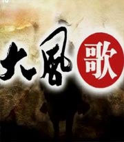

百家讲坛 侠骨柔情陆放翁
介绍：
他是中国历史上最高产的诗人，流传下来的诗歌达九千多首；他生长在一个战火纷飞，国破家亡的动荡年代，一生遭遇了太多的坎坷；他是一个无所畏惧的铁血男儿，一生渴望征战杀场，恢复中原...他就是陆游。

百家讲坛 向诸葛亮借智慧
介绍：
在《三国演义》中，诸葛亮是智慧的化身，用自己的智慧书写了人间传奇。隆中对策、舌战群儒、草船借箭、七擒孟获，一个个经典之作，犹如苍穹中的一颗颗璀璨的明珠，成就了他无人企及的智慧传奇。那么，孔明先生的智慧究竟从何而来...

百家讲坛 大国医(2012年有重播，跳转到2012年页面)
介绍：
毕业于北京中医药大学的中医学博士罗大中先生，对珍贵的中医医案，进行了多年的认真研读，发现在那些简洁凝练的古文之中，不仅蕴含着中医博大精深的理论基础，更难能可贵的是，记录了一个个，医术高超，医德高尚的古代名医...
百家讲坛 名人酒故事
介绍：
本系列节目主要内容：酒是中国饮食文化非常重要的组成部分，古往今来，无论是一些重大的政治事件，还是人们日常生活中的节日民俗，都与酒、与酒文化有着密不可分的关系。作为酒的故乡，中国不仅是世界上最早酿造酒的地方之一...

百家讲坛 中华孝道
介绍：
《孝经》是一部凝聚中国人亲情的经典，它塑造了中华民族的精神气质。虽然它只有1800多字，是儒家经典中最薄的一本书，但它却承载着最厚重的一个字“孝”。

百家讲坛 大风歌
介绍：
《大风歌》是百家讲坛在2011年02年24日播出的栏目，由王立群主持。主要讲述刘邦的一生之成败，对之进行反思和总结，得到对今人有用的启迪。
百家讲坛 英雄项羽
介绍：
项羽（前232－前202）名籍，字羽，通常被称作项羽，中国古代杰出军事家及著名政治人物。中国军事思想“勇战”派代表人物，秦末起义军领袖。华夏族。下相（今江苏宿迁）人。秦末随项梁发动会稽起义，在前207年的决定性战役巨鹿之战中大破秦军主力...

百家讲坛 郦波评说曾国藩家训_上部
介绍：
曾国藩是晚清一位极具争议的人物，既有中兴名臣的美称，又有“卖国贼”的恶名，可谓毁誉参半，褒贬不一，无论欣赏他的人还是鄙视他的人都对他的家书推崇备至，可见他的家书不仅是一部记录家常的书信集，更是一部蕴藏着为人处世，持家教子的智慧书。

百家讲坛 商贾传奇
介绍：
翻开《史记》，我们看到从传说中的黄帝到汉武帝时期将近三千年的历史，在这一段历史篇章中，不仅有王朝的兴衰更替和农耕经济的发展，同时我们还看到了很多中国早期商人活跃的身影。那么，在以农业文明为主的中国古代，最早的商人是怎样产生的呢？
百家讲坛 大隋风云_上部
介绍：
富强、文明与暴虐、造反、短命并存。它有昙花怒放、艳压群芳的不可一世，又有横征暴敛、民不聊生的混乱不堪。每一个场景它都不同寻常，每一个瞬间它都耐人寻味。富强、文明和暴虐、短命，无论我们想象力多么丰富，这几个词凑在一起是那么的不协调...
百家讲坛 王树增解读辽沈战役
介绍：
王树增解读辽沈战役

百家讲坛 王树增解读淮海战役
介绍：
淮海战役在个方面落后的情况下战胜，成为战争史上的奇迹，中国共产党将最初的设想逐步升级，最后成为一场决定性的战役，成为三大战役中牺牲人说最多、歼灭敌人最多的战役，本期节目中，王树增讲解了当是战争中共产党是怎样从小淮海战役升级为大淮海战役...
百家讲坛 王树增解读平津战役
介绍：
1948年5月中共中央却将总部中枢机关搬到了敌人的眼皮底下，也就是位于河北西南部的平山县西柏坡村，这个普通的山村成为中国共产党领导全国人民和人民军队与国民党进行战略大决战，创建新中国的指挥中心，那么，促使中共中央领导人做出这个大胆的战略决策的原因...

百家讲坛 信仰的力量
介绍：
《信仰的力量》共分6集，分别是《红岩》作者的别样人生；红色作家罗广斌；虎穴龙潭建奇功；红色特工张露萍；黑牢里的自白；红岩烈士陈然；母子同心写传奇；红岩烈士王朴和他的母亲金永华；道是无情却有情；红岩烈士刘国志；一片丹心向阳开；红岩烈士江竹筠。

百家讲坛 隋唐英雄志
介绍：
时至今日，评书演义、戏剧小说，文艺舞台上幕幕隋唐英雄的故事，依然深入人心，经久不衰，其中最为人所熟知的人物就是秦琼，人们常说时势造英雄，秦琼作为一位历史的亲历者，见证了整个隋亡唐兴的风云变幻。梅毅老师将从秦琼开始为我们掀开一幅波澜壮阔的英雄史诗画卷...

百家讲坛 写实徐悲鸿
介绍：
本系列节目主要内容：徐悲鸿是我国近代最著名的画家之一，擅长于素描、油画、中国画，他把西方艺术手法融入到中国画中，创造了新颖而独特的风格，他的创造题材广泛，所做的画像无不落笔有神，栩栩如生，起到了承前启后的过渡作用...
百家讲坛 麻辣说三国：跟司马懿学管理
介绍：
司马懿是三国时期魏国杰出的政治家、军事家，西晋王朝的奠基人，是辅佐了魏国三代的托孤辅政之重臣，后期成为全权掌控魏国朝政的权臣，平生最显著的功绩是多次亲率大军成功对抗诸葛亮的北伐。本节目通过讲述司马懿一生中遇到的众多历史事件...
百家讲坛 春秋五霸
介绍：
从公元前770年到前476年，历史上称为春秋时代。在这二百九十多年间，社会风雷激荡，可以说是烽烟四起，战火连天。仅据鲁史《春秋》记载的军事行动就有四百八十余次。司马迁说：春秋之中，“弑君三十六，亡国五十二，诸侯奔走不得保其社稷（jì）者，不可胜数...

百家讲坛 唐宋八大家_王安石
介绍：
王安石，字介甫，号半山，封荆国公。汉族。北宋杰出的政治家、思想家、文学家、改革家，唐宋八大家之一。有《王临川集》、《临川集拾遗》等存世。官至宰相，主张改革变法。诗作《元日》、《梅花》等最为著名。

百家讲坛 彭林说礼
介绍：
在中国古代，要想成为君子应该具备哪些条件呢？时隔千年的跨越，凝聚着儒家思想经典智慧的“中华礼仪”究竟有着怎样的特殊魅力？它又会给我们的心灵深处带来哪些启迪和帮助呢？
百家讲坛 万历兴亡录
介绍：
明神宗万历皇帝是明朝在位时间最长的皇帝，他主政的四十八年占了明朝全部国运的六分之一。他即位之初，由于有张居正的辅佐而使社会一片欣欣向荣，明朝也出现了一个中兴的局面。但随后，在立太子的问题上万历皇帝与众位大臣僵持对立...

百家讲坛 囚徒天子光绪
介绍：
地位高于慈禧的慈安太后暴死，慈禧太后是凶手吗？戊戌政变中，袁世凯真的告密了吗？光绪和慈禧在不到一天的时间了先后过世，是阴谋吗？在位34年的光绪皇帝，又有哪些鲜为人知的深宫秘闻？

百家讲坛 王立群读《史记》秦始皇
介绍：
秦朝作为中国统一多民族封建国家的肇始，在史册上留下了彪炳千秋的厚重笔墨。秦始皇十三岁继承秦国王位。二十二岁亲理朝政，三十九岁完成了统一中国的大业，缔造了一个大一统的大秦帝国。他自称始皇帝，希望他的王朝传之无穷。然而这个伟大帝国仅仅历时十五年就轰然倒塌...